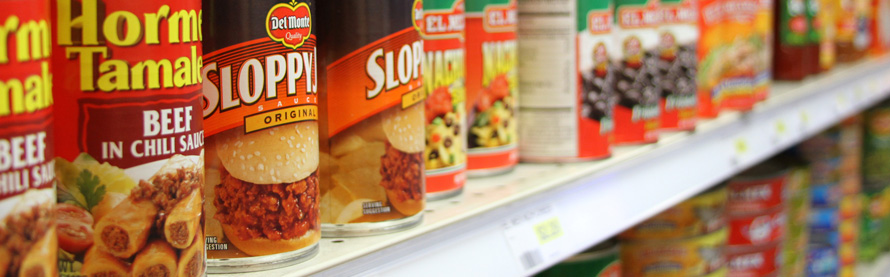
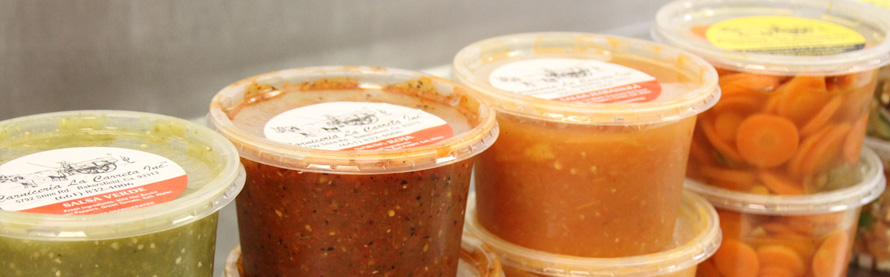
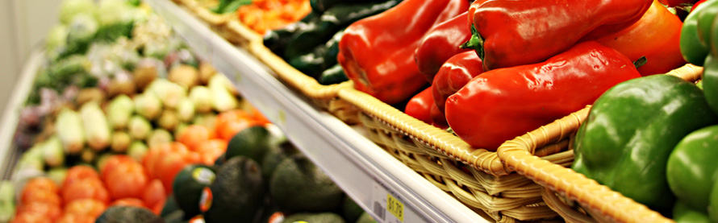
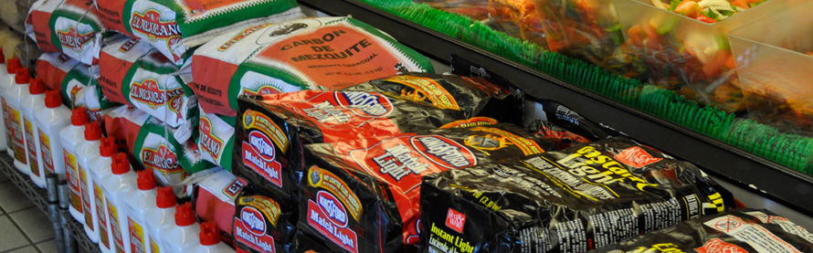
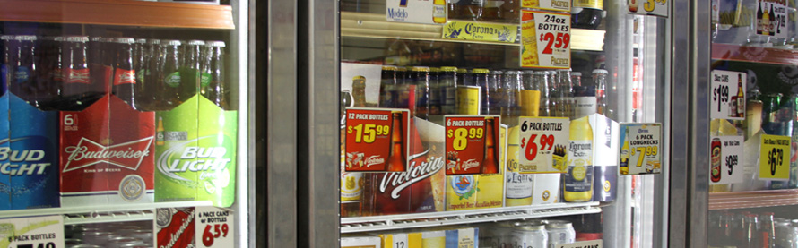

Grocery
We're more than just a full-service butcher shop! We're also a grocery store, specializing in popular Latin market products. You’ll also find common American food items and nonfood items as well, for all of your grocery shopping needs. So if you're looking for a refreshing alternative to your regular chain store, come on in!
Latin Products
We carry a wide variety of traditional Hispanic grocery items, like corn and flour tortillas. We also have popular Latin brands that you won't find at your regular grocery store. 
Main Market Originals
Looking for authentic Mexican side dishes and salsas made with only the freshest ingredients? Look no further. We make them fresh, every day: Salsa Habanera, Salsa Roja, Salsa Verde, Guacamole, Zanahorias en Escabeche, and Pico de Gallo. 
Produce
We have delicious and nutritious farm-fresh fruits and vegetables straight from the San Joaquin Valley. 
Everyday Grocery Items
For your everyday grocery shopping, you'll find a wide variety of canned goods, bread, beans, rice, and other staple foods. And we also have a big selection of charcoal briquettes to meet any grilling needs. 
Refreshments
Quench your thirst with a wide selection of cold, glass bottled, traditional Mexican soft drinks along with your favorite American sodas and refreshments. We also carry a large variety of the most popular Mexican and American beers. 